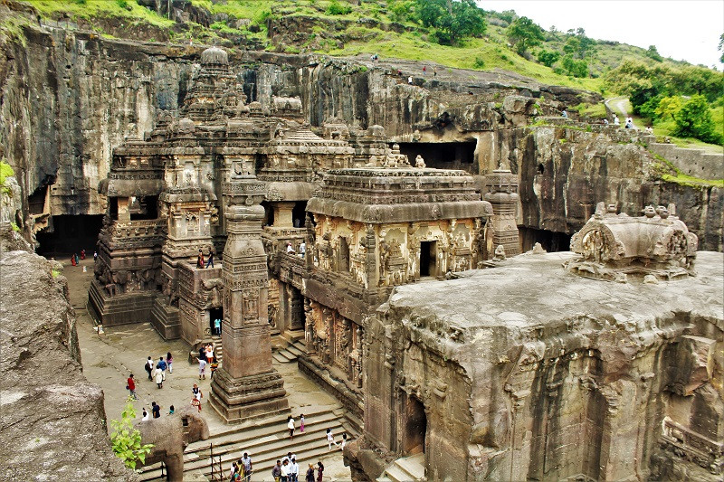
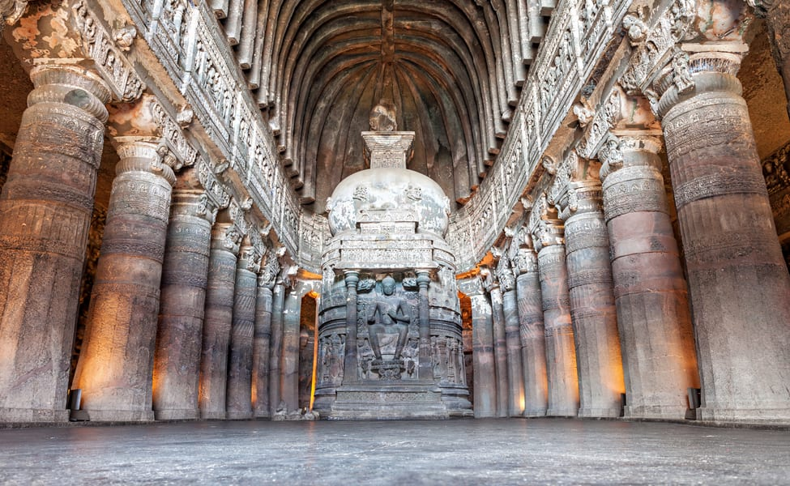

Ajanta and Ellora caves, considered to be one of the finest examples of ancient rock-cut caves, are located near Aurangabad in Maharashtra, India. Ajanta and Ellora caves complex is adorned with beautiful sculptures, paintings, and frescoes and include Buddhist monasteries, Hindu and Jain temples. The Ajanta caves are 29 in number and were built between the 2nd century BC and 6th century AD, whereas the Ellora Caves are more spread out and 34 in number and dates to the period between 6th and 11th Century AD.
Ajanta and Ellora caves are designated as UNESCO World Heritage Sites and are quite popular among travelers worldwide. Ajanta Caves, located around 99km north of Aurangabad, are mostly Buddhist sites and were used as a retreat by Buddhist Monks. Ellora is just 15 km west of Aurangabad and has a better mix of Hindu, Jain, and Buddhist sites. These hand-carved caves were built and sponsored by the Indian rulers of those periods and almost buried by thick forests. One of the most famous places in the entire Ajanta and Ellora Caves is the Kailash Temple, which is also the single most massive monolithic structure globally. These rock-cut caves containing carvings are some of the best examples of ancient Indian architecture and sculpture.